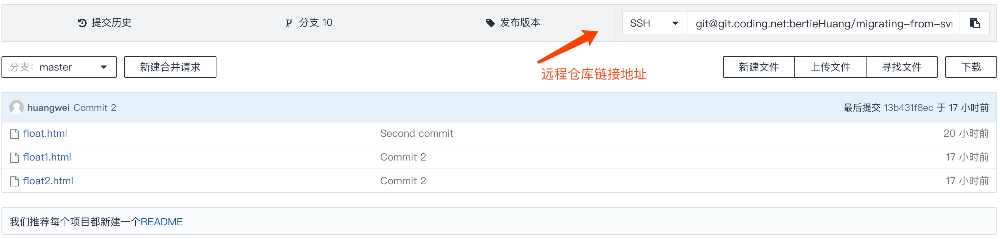
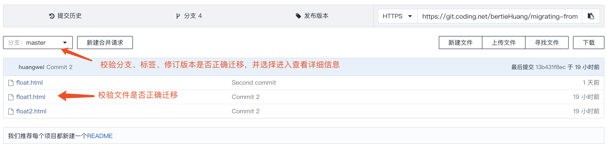

文章内容
迁移前的准备
- 需要迁移的本地 SVN 工作目录。
- 电脑安装了 Git 版本控制工具。
开始迁移
1. 创建空的项目仓库
在开发者平台上创建一个没有任何文件的仓库，作为 SVN 项目迁移到腾讯云开发者平台的仓库容器。
如不清楚该如何执行此操作，请查阅创建仓库文档： 创建和更改项目
2. 获得原 SVN 仓库使用的作者名字列表
在 SVN 中，每一个人提交时都需要在系统中有一个用户，它会被记录在提交信息内。这些信息的格式和内容与 Git 默认的格式和内容略有差别，为了矫正这些差别，我们需要去获得原 SVN 仓库使用的作者名字列表信息并做格式改动。
进入到 SVN 项目工作目录中，执行：
$ svn log -q | awk -F '|' '/^r/ {sub("^ ", "", $2); sub(" $", "", $2); print $2" = "$2" <"$2">"}' | sort -u > authors-transform.txt
该命令会去获取原 SVN 仓库内的日志，转化为正确的格式，去除重复的用户信息之后再保存到当前目录下的 authors-transform.txt 文件中。
为了验证该步骤的正确，我们可以查看 authors-transform.txt 的文件内容，它应该为以下格式的内容：
schacon = Scott Chacon <schacon>
selse = Someo Nelse <selse>
由于 SVN 仅可以获取到使用者的用户名，但是在 Git 中，我们往往需要给使用者设置邮箱，那么我们可以将 authors-transform.txt 内的内容改为：
schacon = Scott Chacon <schacon@geemail.com>
selse = Someo Nelse <selse@geemail.com>
3. 利用 git svn 克隆 SVN 仓库
新建一个目录作为 Git 项目的容器，并进入到该目录中，执行下面的命令：
$ git svn clone SVNRepoURL --no-metadata -A authors-transform.txt -T trunk -b branches -t tags
SVNRepoURL：为 SVN 远程仓库地址，请用你的 SVN 远程仓库地址替换掉它，并确保该链接可以正常使用。
--no-metadata：让原 SVN 项目日志中的内容更符合 Git 的格式规范，且去掉了SVN ID、URL此类无用信息。
-A authors-transform.txt：指定作者列表信息。默认在当前目录获取，假如当前目录中不存在，请将在[2. 获得原 SVN 仓库使用的作者名字列表]中所产出的 authors-transform.txt 移动到当前目录下。
-T trunk -b branches -t tags：告诉 Git, SVN 仓库遵循基本的分支与标签惯例。 如果你命名了不同的主干、分支或标签，可以修改这些参数，比如下面这个例子：
-T yourTrunkName -b yourBranchesName -t yourTagsName
假如原 SVN 项目文件较多或体积较大，那么该过程会持续较长时间。
4. 转化 svn:ignore 至 .gitignore
在 Git 项目容器下执行以下命令：
$ git svn show-ignore > .gitignore
$ git add .gitignore
$ git commit -m 'your commit message'
该命令会根据原 SVN 项目中的忽略项，生成对应的 .gitignore 文件，并提交。
5. 更改分支和标签的引用地址
在 Git 项目容器下执行
$ git show-ref
将会输出类似以下的分支和标签引用列表：
13b431f8ec6ab6100ba39378abaf9f410dbcbd96 refs/heads/master
3256b506e34a520b102627f81c7df9f3a148947a refs/remotes/origin/branch1
1a2c0b78cd8ac28d4bee7735dd0683525d36d03c refs/remotes/origin/branch2
240fce8938ffef6a41ea6cf2a99153ff92ac3181 refs/remotes/origin/branch2@9
bd13c1591bb8239e6049258092e28c6235dabee5 refs/remotes/origin/tags/tag1
6f9759f9b1e356bfb0fe697f5d4030a44d9b76c9 refs/remotes/origin/tags/tag2
第一步，我们需要清理 git svn 命令设置的不合符 Git 日常使用的引用。 首先移动标签，这样它们就是标签而不是奇怪的远程引用，然后再移动剩余的分支这样它们就是本地的了。
为了将标签变为合适的 Git 标签，运行：
$ cp -Rf .git/refs/remotes/origin/tags/* .git/refs/tags/
$ rm -Rf .git/refs/remotes/origin/tags
这会使原来在 remotes/origin/tags/ 里的远程分支引用变成真正的（轻量）标签。
接下来，将 refs/remotes 下剩余的引用移动为本地分支：
$ cp -Rf .git/refs/remotes/* .git/refs/heads/
$ rm -Rf .git/refs/remotes
6. 推送至腾讯云开发者平台仓库中
下面是一个为你的本地项目添加远程仓库地址的例子：
$ git remote add origin git@git.dev.tencent.com:bertieHuang/svn.git
你可以在迁移目的仓库页面找到该远程地址，复制并替换掉例子中的 git@git.coding.net:bertieHuang/svn.git：

在完成了添加远程仓库的操作之后，我们需要将所有的分支和标签都推送至 Coding 仓库中，执行：
$ git push origin --all
$ git push origin --tags
假如原 SVN 项目文件较多或体积较大，那么该过程会持续较长时间。
7. 检验迁移结果
在推送完成之后，进入迁移至 Coding 的项目中，刷新页面，即可看到迁移后的效果，同时，你也可以通过下图的方式校验：
